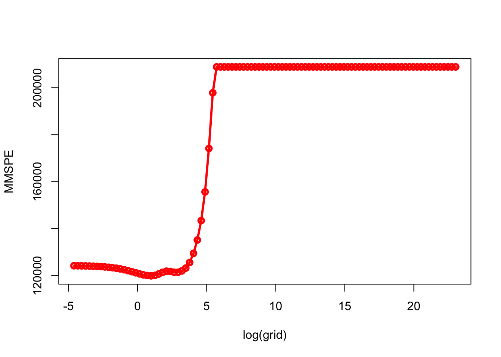
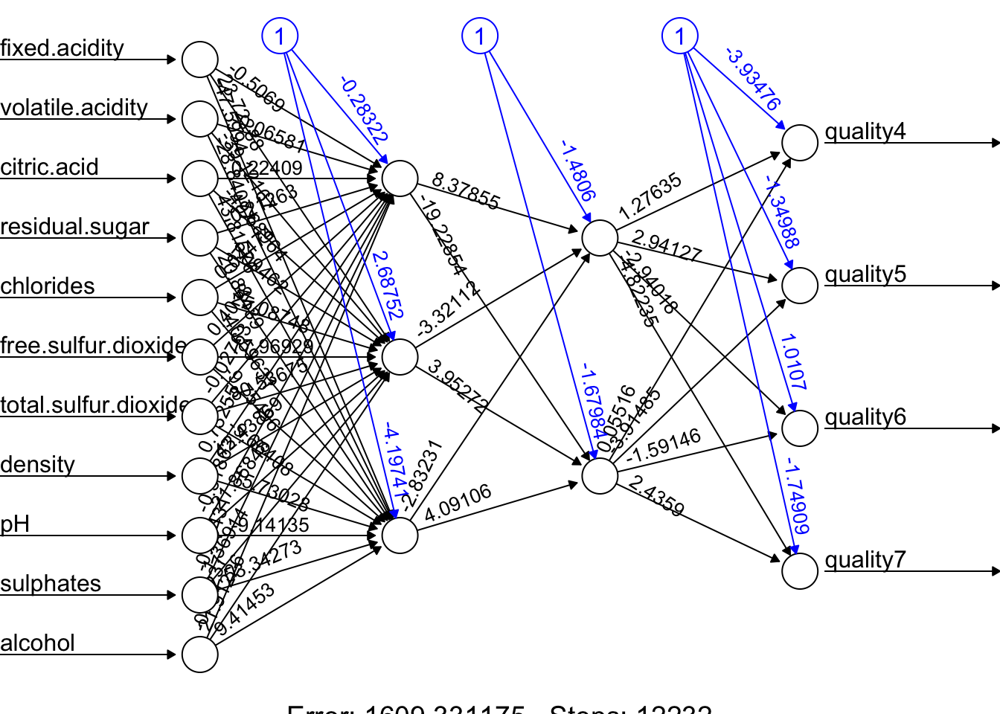
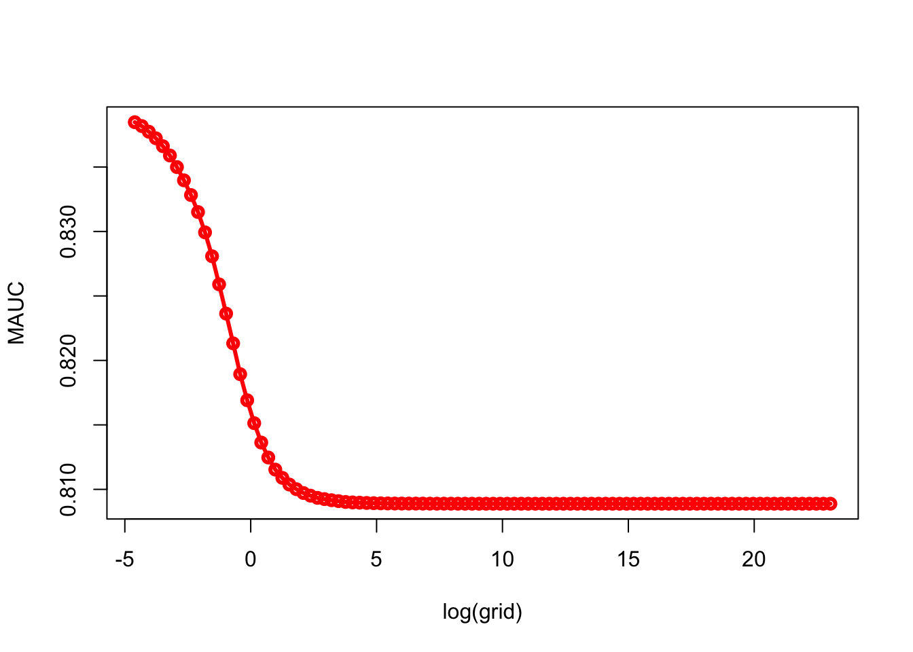
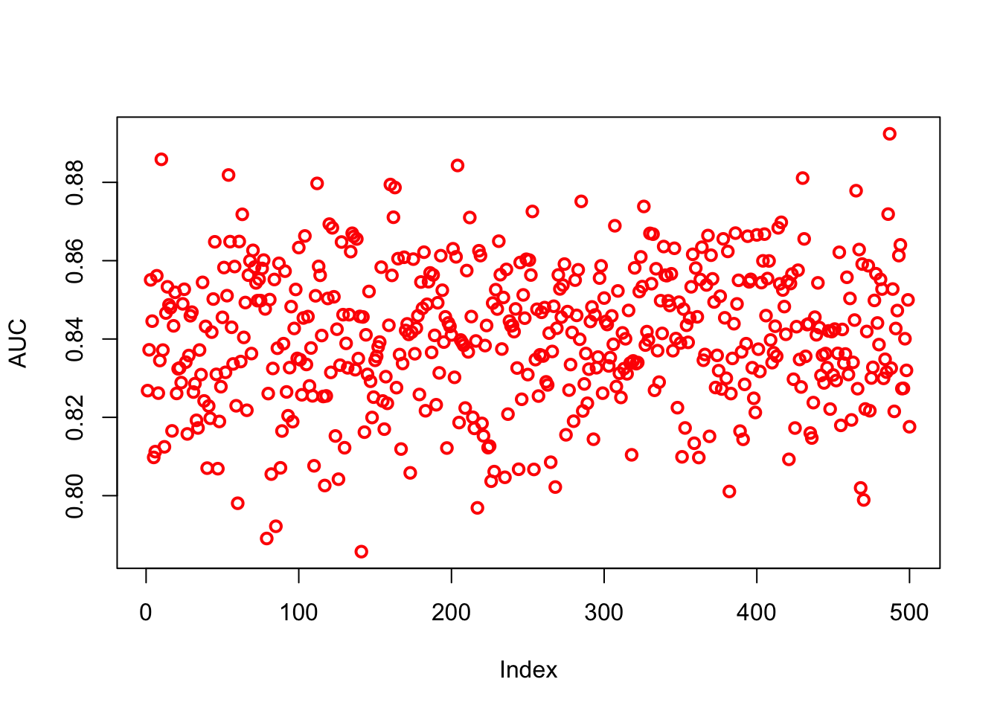
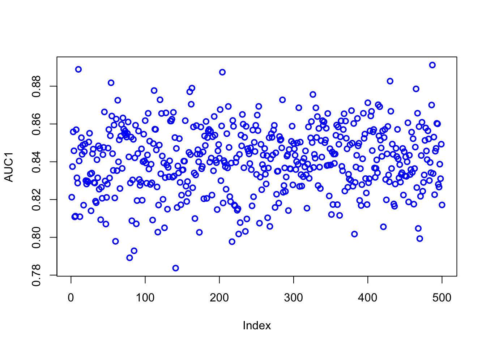

Chapter 18 Lasso
Ridge regression does have one obvious disadvantage. The penalty, \(\lambda \sum_{j} \beta_{j}^{2}\), will shrink all of the coefficients towards zero, but it will not set any of them exactly to zero. This may not be a problem for prediction accuracy, but it can create a challenge in model interpretation in settings in which the number of variables is quite large. Increasing the value of \(\lambda\) will tend to reduce the magnitudes of the coefficients, but will not result in exclusion of any of the variables.
The lasso (least absolute shrinkage and selection operator) is a relatively recent alternative to ridge regression that overcomes this disadvantage. The lasso coefficients minimize the following quantity:
\[\begin{equation} \sum_{i=1}^{n}\left(y_{i}-\beta_{0}-\sum_{j=1}^{p} \beta_{j} x_{i j}\right)^{2}+\lambda \sum_{j=1}^{p}\left|\beta_{j}\right|=\operatorname{RSS}+\lambda \sum_{j=1}^{p}\left|\beta_{j}\right| \tag{18.1} \end{equation}\]
As with ridge regression, the lasso shrinks the coefficient estimates towards zero. However, in the case of the lasso, the \(\ell_{1}\) penalty, which is represented by the second term of equation 16.1, has the effect of forcing some of the coefficient estimates to be exactly equal to zero when the tuning parameter \(\lambda\) is sufficiently large. Hence, the lasso performs variable selection. As a result, models generated from the lasso are generally much easier to interpret than those produced by ridge regression.
In general, one might expect lasso to perform better in a setting where a relatively small number of predictors have substantial coefficients, and the remaining predictors have coefficients that are very small or that equal zero. Ridge regression will perform better when the response is a function of many predictors, all with coefficients of roughly equal size. However, the number of predictors that is related to the response is never known a priori for real data sets.
18.1 Regression
Now, we will apply lasso to the same data in the last chapter, Hitters. Again, we will follow the similar way to compare ridge and lasso as in ISLR :
X <- model.matrix(Salary~., df)[,-1]
y <- df$Salary
# Without a specific grid on lambda
set.seed(1)
train <- sample(1:nrow(X), nrow(X)/2)
test <- c(-train)
ytest <- y[test]
set.seed(1)
ridge.out <- cv.glmnet(X[train,], y[train], alpha = 0)
yhatR <- predict(ridge.out, s = "lambda.min", newx = X[test,])
mse_r <- mean((yhatR - ytest)^2)
set.seed(1)
lasso.out <- cv.glmnet(X[train,], y[train], alpha = 1)
yhatL <- predict(lasso.out, s = "lambda.min", newx = X[test,])
mse_l <- mean((yhatL - ytest)^2)
mse_r## [1] 139863.2mse_l## [1] 143668.8# With a specific grid on lambda + lm()
set.seed(1)
train <- sample(1:nrow(X), nrow(X)/2)
test <- c(-train)
ytest <- y[test]
ridge.mod <- glmnet(X[train,], y[train], alpha = 0, lambda = grid, thresh = 1e-12)
set.seed(1)
cv.outR <- cv.glmnet(X[train,], y[train], alpha = 0)
bestlamR <- cv.outR$lambda.min
yhatR <- predict(ridge.mod, s = bestlamR, newx = X[test,])
mse_R <- mean((yhatR - ytest)^2)
lasso.mod <- glmnet(X[train,], y[train], alpha = 1, lambda = grid, thresh = 1e-12)
set.seed(1)
cv.outL <- cv.glmnet(X[train,], y[train], alpha = 1)
bestlamL <- cv.outL$lambda.min
yhatL <- predict(lasso.mod, s = bestlamL, newx = X[test,])
mse_L <- mean((yhatL - ytest)^2)
mse_R## [1] 139856.6mse_L## [1] 143572.1Now we will apply our own algorithm
MSPE <- c()
MMSPE <- c()
for(i in 1:length(grid)){
for(j in 1:100){
set.seed(j)
ind <- sample(nrow(df), nrow(df), replace = TRUE)
ind <- unique(ind)
train <- df[ind, ]
xtrain <- model.matrix(Salary~., train)[,-1]
ytrain <- df[ind, 19]
test <- df[-ind, ]
xtest <- model.matrix(Salary~., test)[,-1]
ytest <- df[-ind, 19]
model <- glmnet(xtrain, ytrain, alpha = 1, lambda = grid[i], thresh = 1e-12)
yhat <- predict(model, s = grid[i], newx = xtest)
MSPE[j] <- mean((yhat - ytest)^2)
}
MMSPE[i] <- mean(MSPE)
}
min(MMSPE)## [1] 119855.1grid[which.min(MMSPE)]## [1] 2.656088plot(log(grid), MMSPE, type="o", col = "red", lwd = 3)
What are the coefficients?
coef_lasso <- coef(model, s=grid[which.min(MMSPE)], nonzero = T)
coef_lasso## 20 x 1 sparse Matrix of class "dgCMatrix"
## s1
## (Intercept) 285.73172897
## AtBat -1.26603002
## Hits 2.04074005
## HmRun 0.02355750
## Runs 2.77938363
## RBI 0.45867292
## Walks 3.44852914
## Years -8.78839869
## CAtBat -0.26343169
## CHits 1.29690477
## CHmRun 1.32913790
## CRuns 0.05007662
## CRBI -0.05515544
## CWalks -0.33624685
## LeagueN 132.06438132
## DivisionW -119.26618910
## PutOuts 0.19772257
## Assists 0.64809649
## Errors -6.97381705
## NewLeagueN -54.6272880018.2 LPM/Logistic
Instead of numerical outcome variable, when we have a binary variable the regression becomes a classification problem. As we have seen before, we can use LPM or Logistic regression when the response is categorical. If there are two possible outcomes, we use the binomial distribution, else we use the multinomial.
We will start with Titanic dataset:
library(PASWR)
remove(list = ls())
data(titanic3)
str(titanic3)## 'data.frame': 1309 obs. of 14 variables:
## $ pclass : Factor w/ 3 levels "1st","2nd","3rd": 1 1 1 1 1 1 1 1 1 1 ...
## $ survived : int 1 1 0 0 0 1 1 0 1 0 ...
## $ name : Factor w/ 1307 levels "Abbing, Mr. Anthony",..: 22 24 25 26 27 31 46 47 51 55 ...
## $ sex : Factor w/ 2 levels "female","male": 1 2 1 2 1 2 1 2 1 2 ...
## $ age : num 29 0.917 2 30 25 ...
## $ sibsp : int 0 1 1 1 1 0 1 0 2 0 ...
## $ parch : int 0 2 2 2 2 0 0 0 0 0 ...
## $ ticket : Factor w/ 929 levels "110152","110413",..: 188 50 50 50 50 125 93 16 77 826 ...
## $ fare : num 211 152 152 152 152 ...
## $ cabin : Factor w/ 187 levels "","A10","A11",..: 45 81 81 81 81 151 147 17 63 1 ...
## $ embarked : Factor w/ 4 levels "","Cherbourg",..: 4 4 4 4 4 4 4 4 4 2 ...
## $ boat : Factor w/ 28 levels "","1","10","11",..: 13 4 1 1 1 14 3 1 28 1 ...
## $ body : int NA NA NA 135 NA NA NA NA NA 22 ...
## $ home.dest: Factor w/ 369 levels "","?Havana, Cuba",..: 309 231 231 231 231 237 163 25 23 229 ...# Data
a <- c("survived","sex","age","pclass","sibsp","parch")
df <- titanic3[, a]
df <- df[complete.cases(df), ]
df$survived <- as.factor(df$survived)
# model.matrix
X <- model.matrix(survived~., df)[,-1]
y <- df$survived
# look at the difference b/w X and df
head(X)## sexmale age pclass2nd pclass3rd sibsp parch
## 1 0 29.0000 0 0 0 0
## 2 1 0.9167 0 0 1 2
## 3 0 2.0000 0 0 1 2
## 4 1 30.0000 0 0 1 2
## 5 0 25.0000 0 0 1 2
## 6 1 48.0000 0 0 0 0The input matrix x is the same as other families. For binomial logistic regression, the response variable y should be either a factor with two levels, or a two-column matrix of counts or proportions. Other optional arguments of glmnet for binomial regression are almost same as those for Gaussian family. Don’t forget to set family option to “binomial”.
library(ROCR)
set.seed(1)
train <- sample(1:nrow(X), nrow(X)/2)
test <- c(-train)
ytest <- y[test]
# Ridge
set.seed(1)
cv.outR <- cv.glmnet(X[train,], y[train], alpha = 0, family = "binomial")
phatR <- predict(cv.outR, s = "lambda.min", newx = X[test,], type = "response")
predR <- prediction(phatR, ytest)
aucR <- performance(predR, measure = "auc")
AUCR <- aucR@y.values[[1]]
# Lasso
set.seed(1)
cv.outL <- cv.glmnet(X[train,], y[train], alpha = 1, family = "binomial")
phatL <- predict(cv.outL, s = "lambda.min", newx = X[test,], type = "response")
predL <- prediction(phatL, ytest)
aucL <- performance(predL, measure = "auc")
AUCL <- aucL@y.values[[1]]
AUCR## [1] 0.8663923AUCL## [1] 0.8656826# Logistic
tr <- df[train,]
tt <- df[test, ]
logi <- glm(survived~., data = tr, family = "binomial")
phat <- predict(logi, newdata = tt, type = "response")
pred <- prediction(phat, tt$survived)
auc <- performance(pred, measure = "auc")
auc@y.values[[1]]## [1] 0.8655769Now our own algorithm:
library(PASWR)
remove(list = ls())
data(titanic3)
# Data
a <- c("survived","sex","age","pclass","sibsp","parch")
df <- titanic3[, a]
df <- df[complete.cases(df), ]
df$survived <- as.factor(df$survived)
grid = 10^seq(10, -2, length = 100)
AUC <- c()
MAUC <- c()
for(i in 1:length(grid)){
for(j in 1:100){
set.seed(j)
ind <- sample(nrow(df), nrow(df), replace = TRUE)
ind <- unique(ind)
train <- df[ind, ]
xtrain <- model.matrix(survived~., train)[,-1]
ytrain <- df[ind, 1]
test <- df[-ind, ]
xtest <- model.matrix(survived~., test)[,-1]
ytest <- df[-ind, 1]
model <- glmnet(xtrain, ytrain, alpha = 1, lambda = grid[i],
thresh = 1e-12, family = "binomial")
phat <- predict(model, s = grid[i], newx = xtest, type = "response")
pred <- prediction(phat, ytest)
auc <- performance(pred, measure = "auc")
AUC[j] <- auc@y.values[[1]]
}
MAUC[i] <- mean(AUC)
}
max(MAUC)## [1] 0.8370252grid[which.max(MAUC)]## [1] 0.01plot(log(grid), MAUC, type="o", col = "red", lwd = 3)
And Ridge:
library(PASWR)
remove(list = ls())
data(titanic3)
# Data
a <- c("survived","sex","age","pclass","sibsp","parch")
df <- titanic3[, a]
df <- df[complete.cases(df), ]
df$survived <- as.factor(df$survived)
grid = 10^seq(10, -2, length = 100)
AUC <- c()
MAUC <- c()
for(i in 1:length(grid)){
for(j in 1:100){
set.seed(j)
ind <- sample(nrow(df), nrow(df), replace = TRUE)
ind <- unique(ind)
train <- df[ind, ]
xtrain <- model.matrix(survived~., train)[,-1]
ytrain <- df[ind, 1]
test <- df[-ind, ]
xtest <- model.matrix(survived~., test)[,-1]
ytest <- df[-ind, 1]
model <- glmnet(xtrain, ytrain, alpha = 0, lambda = grid[i],
thresh = 1e-12, family = "binomial")
phat <- predict(model, s = grid[i], newx = xtest, type = "response")
pred <- prediction(phat, ytest)
auc <- performance(pred, measure = "auc")
AUC[j] <- auc@y.values[[1]]
}
MAUC[i] <- mean(AUC)
}
max(MAUC)## [1] 0.8384748grid[which.max(MAUC)]## [1] 0.01plot(log(grid), MAUC, type="o", col = "red", lwd = 3)
What’s the level of uncertainty?
library(PASWR)
remove(list = ls())
data(titanic3)
# Data
a <- c("survived","sex","age","pclass","sibsp","parch")
df <- titanic3[, a]
df <- df[complete.cases(df), ]
df$survived <- as.factor(df$survived)
AUC <- c()
for(i in 1:500){
set.seed(i)
ind <- sample(nrow(df), nrow(df), replace = TRUE)
ind <- unique(ind)
train <- df[ind, ]
xtrain <- model.matrix(survived~., train)[,-1]
ytrain <- df[ind, 1]
test <- df[-ind, ]
xtest <- model.matrix(survived~., test)[,-1]
ytest <- df[-ind, 1]
model <- glmnet(xtrain, ytrain, alpha = 0, lambda = 0.01, family = "binomial")
phat <- predict(model, s = 0.01, newx = xtest, type = "response")
pred <- prediction(phat, ytest)
auc <- performance(pred, measure = "auc")
AUC[i] <- auc@y.values[[1]]
}
sqrt(var(AUC))## [1] 0.0175584mean(AUC)## [1] 0.8405726plot(AUC, col = "red", lwd = 2)
And the uncertainty with logistic:
AUC1 <- c()
for (i in 1:500) {
set.seed(i)
ind <- sample(nrow(df), nrow(df), replace = TRUE)
tr <- df[ind, ]
tt <- df[-ind, ]
logi <- glm(survived~., data = tr, family = "binomial")
phat <- predict(logi, newdata = tt, type = "response")
pred <- prediction(phat, tt$survived)
auc <- performance(pred, measure = "auc")
AUC1[i] <- auc@y.values[[1]]
}
sqrt(var(AUC1))## [1] 0.01736246mean(AUC1)## [1] 0.8408637plot(AUC1, col = "blue", lwd = 2)